მოდა, სტილი და ისტორია
🔹ზედა ტანსაცმელი, რომელიც ამ შემოდგომას ქუჩებს დაიპყრობს როცა ზაფხულის სიცხეს შემოდგომის სიცივე და წვიმა ცვლის, დგება გარდერობის სეზონური ცვლილებისთვის მომზადების დრო. ყველაზე მნიშვნელოვანი და რთული — სწორი ქურთუკის ან პალტოს არჩევა შემოდგომისთვის. ესთეტიკური იერის გარდა, ის უნდა იყოს წყალგაუმტარი, თერმოდაცვითი და ასე შემდეგ.
|
🔹 პალტოები |
🔹 Belted Coats: 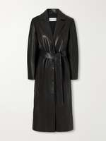 ელეგანტური კლასიკა: პალტოები სარტყელით, რომლებიც ქმნიან რბილ სილუეტს და ხაზს უსვამენ წელის. როგორც წესი, მზადდება ღილების გარეშე ან საკინძებზე, აერთიანებენ დახვეწილ იერს და კომფორტს. შესანიშნავად გამოიყურებიან როგორც შარვლებთან, ასევე კაბებთან, იერს ქალურობას მატებენ. ხშირად იკერება კაშმირის ან მკვრივი მატყლისგან. |
🔹 Capes: 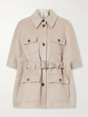 თავისუფალი, უსახელო პალტოები ან ხელებისთვის ჭრილებით, რომლებიც ქმნიან ეფექტურ მოქცევად სილუეტს და იერს მატებენ დრამატიზმსა და ხიბლს. იდეალურია მრავალშრიანი კომპლექტებისთვის — ჟაკეტის ან სვიტერის თავზე. მსუბუქი ვარიანტები შესაფერისია გრილი დღეებისთვის, ხოლო იზოლირებული — გვიანი შემოდგომისთვის. |
🔹 Long Coats: 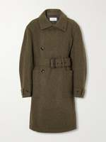 პალტოები მუხლქვემოთ ან ტერფებამდე. იდეალური არჩევანი ცივი ამინდისთვის, რომელიც იერს სიდიდე-დიდებულებას მატებს და ვიზუალურად წაგრძელებს სიმაღლეს. კარგად იცავენ ქარისგან წაგრძელებული ჭრილის წყალობით. სასურველი ქსოვილები — დრაპი, კაშმირი და მკვრივი მატყლი. |
🔹 Trench Coats: 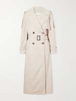 ორმაგრიგებიანი საწვიმარები წყალგაუმტარი ქსოვილის ან მკვრივი ბამბისგან, დამახასიათებელი საყელოთი, პოგონებითა და სარტყელით. გარდერობის საბაზისო ელემენტი გაზაფხულისა და შემოდგომისთვის. გამოირჩევიან პრაქტიკულობით წვიმიან ამინდში და მრავალმხრივობით — შესაფერისია როგორც ოფისის კოსტუმთან, ასევე ჯინსებთან. |
🔹 Wool Coats: 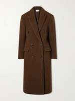 თბილი მატყლის პალტოები ბუნებრივი ან შერეული მატყლისგან შესანიშნავი თერმორეგულაციით. არსებობს მრავალი ფასონი — მკაცრი ორმაგრიგებიანიდან ოვერსაიზამდე. ინარჩუნებენ სითბოს ნულის ქვემოთ ტემპერატურაზეც და დიდხანს ინარჩუნებენ ფორმას ძაფების მკვრივი გადახლართვის წყალობით. |
🔹 ქურთუკები
|
🔹 Blazers: 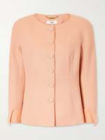 სტრუქტურული ჟაკეტები (პიჯაკები და ბლეიზერები), შესაფერისი საქმიანი, ყოველდღიური თუ საღამოს სტილისთვის. შესანიშნავად უხდება როგორც შარვლებს, ასევე ჯინსებს. შემოდგომის მოდელები ხშირად მზადდება თვიდის, მატყლის ან ველვეტისგან და შეიძლება ჰქონდეთ მსუბუქი საფენი დამატებითი სითბოსთვის. |
🔹 Bomber And Track Jackets: 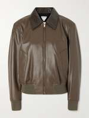 მოკლე, მოცულობითი ქურთუკები ელვაშესაკრავით, ელასტიური მანჟეტებითა და ქვედა ნაწილით. უზრუნველყოფენ მაქსიმალურ მოძრაობის თავისუფლებას და თანამედროვე ქუჩის სტილს. ტრადიციულად იკერება ნეილონის ან პოლიესტერისგან, ხშირად იზოლაციით, რაც მათ შესანიშნავ არჩევანს ხდის ქარიანი ამინდისთვის. |
🔹 Casual Jackets: 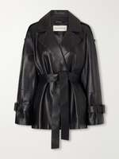 მრავალმხრივი ყოველდღიური ქურთუკები თავისუფალი ან სწორი ჭრილით, დამზადებული ბამბის, ნეილონის ან შერეული ქსოვილებისგან. ხშირად აქვთ მინიმალისტური დიზაინი და ნეიტრალური ფერები, რაც საშუალებას იძლევა ადვილად ჩართოთ ისინი ნებისმიერ გარდერობში. კარგია მრავალშრიანი იერებისთვის. |
🔹 Denim Jackets: 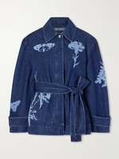 პრაქტიკული ჯინსის ქურთუკები. დროგარეშე ნივთი, რომელიც შესაფერისია მრავალშრიანი იერებისთვის წლის ნებისმიერ დროს. შემოდგომაზე აქტუალურია იზოლირებული ვარიანტები საფენით ან ფლისის შემავსებლით. შესანიშნავად უხდება ნაქსოვ სვიტერებსა და მატყლის შარვლებს. |
🔹 Faux Fur And Shearling: 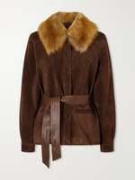 სტილური ზედა ტანსაცმელი ცივი ამინდისთვის რბილი ხელოვნური ბეწვის ან ცხვრის ტყავის (shearling) გამოყენებით, რომელიც ქმნის მყუდრო და ეფექტურ იერს. უზრუნველყოფს შესანიშნავ თერმოიზოლაციას მკვრივი ღეროს წყალობით. თანამედროვე მოდელები გამოირჩევიან სიმსუბუქითა და აცვიათ წინააღმდეგობით. |
🔹 Leather Jackets: 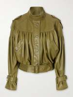 ქურთუკები ნატურალური ან ეკოტყავისგან (მათ შორის კოსუხები და ბაიკერის მოდელები). იერს მატებენ გაბედულებას, ხასიათს და გამძლეობას. ემსახურებიან წლების განმავლობაში, ყოველი ტარებისას იძენენ ინდივიდუალურ ფინიშს. შესანიშნავად იცავენ ქარისა და მცირე წვიმისგან ტყავის მკვრივი სტრუქტურის წყალობით. |
🔹 Quilted And Puffer: 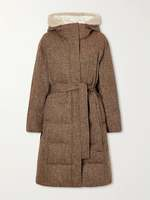 მსუბუქი, მაგრამ თბილი მოდელები ნაკეცებით ან ძირის/სინთეტიკური შემავსებლით. საიმედოდ იცავენ ქარისა და ყინვისგან. თანამედროვე საბუმბლე ქურთუკები ინარჩუნებენ მორგებულ სილუეტს და იწონიან მინიმალურად, რაც მათ კომფორტულს ხდის აქტიური ქალაქური ცხოვრებისთვის. ხშირად აქვთ წყალგამძლე გაჟღენთი. |
🔹 Shirt And Utility Jackets: 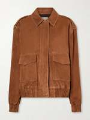 ქურთუკები ჩანთა-ჯიბეებით და დასაკეცი საყელოთი (პერანგ-ქურთუკები და მილიტარი/კარგოს სტილის ქურთუკები). ხშირად დამზადებულია მკვრივი ქსოვილებისგან (ველვეტი, ფლანელი, თვილი) და იდეალურად გამოდგება მრავალშრიანობისთვის. პრაქტიკულია დიდი რაოდენობის ჯიბეებისა და თავისუფალი ჭრილის წყალობით, რომელიც არ ზღუდავს მოძრაობას. |
🔹 Sportswear Jackets: 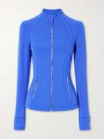 ფუნქციონალური ქარსაფარები და ქურთუკები ტექნოლოგიური მასალებისგან, განკუთვნილი აქტიური დასვენების, სპორტისა და წვიმისგან დაცვისთვის. აღჭურვილია მემბრანული ქსოვილებით, ვენტილაციის სისტემებით და ამრეკლავი ელემენტებით. ინარჩუნებენ სიმშრალეს და კომფორტს ინტენსიური დატვირთვის დროსაც. |
🔹Vests And Gilets: 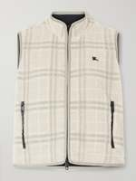 უსახელო მოდელები (საბუმბლე, ნაკეცებიანი ან მატყლის). მოსახერხებელი ვარიანტი გარდამავალი ამინდისთვის და სტილური მრავალშრიანი იერების შესაქმნელად. შესანიშნავად მუშაობენ როგორც დამატებითი ფენა სვიტერის ან პერანგის თავზე, ინარჩუნებენ ხელების თავისუფლებას და ათბობენ ტანს გრილ დღეებში. |
🔹ზედა ტანსაცმლის კოლექციებზე მუშაობდნენ მსოფლიოს წამყვანი დიზაინერები.
|
🔹 პარიზის მწვანე: მოდა, რომელიც თავს აბრუნებდა (პირდაპირი მნიშვნელობით) XIX საუკუნეში ევროპა ნამდვილმა მწვანე ცხელებამ მოიცვა. ელფერი "პარიზის მწვანე" იმდენად ნათელი, წვნიანი და პროვოკაციული იყო, რომ ყველას სურდა — ჰერცოგინიებიდან გრიზეტებამდე. ქუდები, ხელთათმანები, საღამოს კაბები, ქოლგები — ყველაფერი ამ მანათობელ ფერში იყო გახვეული. პრობლემა მხოლოდ ერთი იყო: საღებავს დარიშხანისგან ამზადებდნენ. დიახ, იმავე შხამისგან, რომლითაც ვირთხებს წამლავენ. მაგრამ ქალბატონები ქიმიაზე კი არ ფიქრობდნენ, ისინი სილამაზეზე ფიქრობდნენ. მაგრამ ბალებზე დაიწყო უცნაური რამ: გოგონები ერთმანეთის მიყოლებით კარგავდნენ გონებას. თავიდან ფიქრობდნენ — დაბინძურებული ჰაერი, კორსეტები, მღელვარება. მაგრამ მიზეზი უფრო მარტივი და საშინელი აღმოჩნდა: გახურებულ კანთან შეხებისას ქსოვილი გამოყოფდა ტოქსიკურ ორთქლს. გოგონები არა მხოლოდ კარგავდნენ ცნობიერებას — ისინი ნელ-ნელა იწამლებოდნენ იმისთვის, რომ მეტოქეები შურისგან გასკდნენ. ამბობენ, ყველაზე მტკიცე მოდაზე დამოკიდებულები ტრაბახობდნენ კიდეც: "ჩემი მწვანე ისეთი მაგარია, რომ უკვე პირველი ვალსის შემდეგ ვირყევი!" სამწუხაროდ, აქ ღიმილი უმაგისტროა — ბევრმა ჯანმრთელობა შეიწირა. მაგრამ ახლა ზუსტად ვიცით: მწვანე — იმედის ფერია, მაგრამ არა ქიმიური უსაფრთხოების.
|
გეპატიჟებით ეწვიოთ ჩემი YouTube-არხის განყოფილებას, რომელიც მოდას ეძღვნება. მეგობრებო, კეთილი იყოს თქვენი მობრძანება ჩემს სტილისა და სილამაზის კუთხეში!
როგორ ვიპოვოთ საკუთარი სტილი, ტენდენციების გიჟურ რბოლაში ჩავარდნის გარეშე,
აქ არ არის მოსაწყენი ლექციები — მხოლოდ ცოცხალი საუბარი, გულწრფელი მაგალითები და პრაქტიკული რჩევები.
გადმოდით — მოხარული ვიქნები, რომ გხედავთ ჩემს გამომწერებში! |
🔹 ჩოპინები: ფეხსაცმელი მათთვის, ვისაც სიარული არ უნდა XVI საუკუნის ვენეციელი არისტოკრატები დრამაში კარგად ხვდებოდნენ. მათი ფეხსაცმელი — ჩოპინები — ნახევარ მეტრამდე სიმაღლის ხის პლატფორმები იყო. წარმოიდგინეთ: იცვამთ კოჭებს, ზემოდან — ბროკადის კაბა, და გამოდიხართ საზოგადოებაში. მხოლოდ, სიარული არ შეგიძლიათ. საერთოდ. ფეხი უბრალოდ არ იკეცება ტერფთან, სიმძიმის ცენტრი მარსისკენ გადაადგილდება, და ყოველი ნაბიჯი ეპიკური ვარდნით ემუქრება. ამიტომ, კეთილშობილ ქალბატონებს მხარს უჭერდნენ ორი მოახლე — თითო თითო მხრიდან. პროცესია არ ჰგავდა საზოგადოებაში გასვლას, არამედ მყიფე ვაზის ტრანსპორტირებას. რატომ ასეთი მსხვერპლი? იმიტომ, რომ რაც უფრო მაღალი იყო ჩოპინები, მით უფრო მდიდარი იყო ოჯახი. ზოგი ტრაბახობდა პლატფორმებით, რომელზეც ფეხი ძლივს თავსდებოდა — ეს იყო სუფთა სნობიზმი ცირკის ხელოვნების პირას. ირონია ისაა, რომ პალაცოს იატაკს სპეციალურად სრიალას აკეთებდნენ, რათა ქალბატონები კიდევ უფრო ნელა და დიდებულად მოძრაობდნენ. დღეს ამას "წითელ ხალიჩას" ვეძახით, მაშინ კი — "გადარჩენას სიმაღლეზე". |
| 🔹ფანქრის კალთა: დაბადებული ქარისა და თოკისგან
1908 წელი. ქალბატონი ჰარტ ო. ბერგი ემზადება ისტორიული ფრენისთვის რაიტის ძმებთან. ერთი პრობლემა: მასზე გრძელი კალთაა, ირგვლივ კი პროპელერია. ასაფრენ ზოლზე ქარი ისეთია, რომ ქსოვილი იალქანივით ფრიალებს. იმისთვის, რომ ქალბატონი თვითმფრინავამდე არ აფრინდეს, მას ჭკვიანურად აკრავენ თოკით ტერფებთან. ფრენა წარმატებით სრულდება, კალთა ადგილზე რჩება, ქალბატონი კი, მიწაზე ჩასვლის შემდეგ, პატარა ნაბიჯებით მიიწევს მანქანისკენ — უბრალოდ თოჯინა. ამ სანახაობას უყურებს დიზაინერი პოლ პუარე. და მის თავში ჩნდება აზრი: "ეს გენიალურია! ვიწრო, თავშეკავებული, მაცდური!" ასე ჩნდება ფანქრის კალთის პროტოტიპი. პირველი მოდელები არც თუ ისე ელასტიური იყო, და ქალბატონები იძულებულნი იყვნენ ევლოთ ისე, როგორც ის ქალბატონი ბერგი — პატარა ნაბიჯებით. მაგრამ სილამაზე, როგორც ცნობილია, მოითხოვს არა მხოლოდ მსხვერპლს, არამედ პატარა ნაბიჯს. დღეს ჩვენ სიამოვნებით ვატარებთ ფანქრის კალთას და, მადლობა ღმერთს, თოკების გარეშე. |
| 🔹კოკო შანელი და ნაოჭებიანი აჯანყება
როცა შანელმა სელის კოლექცია გამოუშვა, კრიტიკოსებმა თავები აიტაცეს: "ეს ნაოჭებიანი თეთრეულია! სად არის ელეგანტურობა? სად არის დაუთოება?" გაზეთები სავსე იყო სათაურებით, როგორიცაა "მრეცხავის კოშმარი" და "პარიზი ნაკეცებში". მაგრამ შანელი არ იქნებოდა შანელი, თუ დანებდებოდა. მეორე დღეს იგი გამოვიდა ჟურნალისტებთან, გაისწორა არარსებული ნაკეცი სახელოზე და ყინულოვანი სიმშვიდით თქვა: "ეს არ არის ნაოჭები, mesdames. ეს არის კეთილშობილი ნაკეციანობა." და ეს იყო ყველაფერი. სახელის მაგიამ და აბსოლუტურმა თავდაჯერებულობამ თავისი საქმე გააკეთა. ერთი კვირის შემდეგ სელი მთავარ ტრენდად იქცა, კრიტიკოსები კი ერთხმად გადაიხედეს — უფრო ზუსტად, გადაიუთოვეს. ნაოჭიანობა მოულოდნელად არისტოკრატული დაუდევრობის ნიშანი გახდა, თითქოს, მე იმდენად მდიდარი ვარ, რომ უთოზე არც კი ვფიქრობ. სხვათა შორის, სწორედ მაშინ დაიბადა მემი "ეს არ არის ბაგი, ეს არის ფიჩა" — კომპიუტერულ ეპოქამდე დიდი ხნით ადრე. |
| 🔹ჯინსი მასწავლებლებისა და ცენზორების წინააღმდეგ
1950-იანი წლები, აშშ. გამოდის ფილმი "მეამბოხე უმიზეზოდ" ჯეიმს დინთან, და ყველა მოზარდი მოულოდნელად ხვდება: ჯინსი — ეს არ არის უბრალოდ შარვალი. ეს არის პროტესტი. თავისუფლება. როკ-ენ-როლი მუხლებზე. სკოლები განგაშს უცხადებენ: აკრძალვა! ჯინსს საგანმანათლებლო დაწესებულებებში კანონგარეშე აცხადებენ, თითქოს ამშვიდებენ მოსწავლეებს და აფუჭებენ მორალს. და რა ხდება? ჯინსის გაყიდვები ცისკენ ისვრის. რაც უფრო მკაცრია აკრძალვა, მით უფრო სასურველია ქსოვილი. მშობლები პანიკაში არიან, მასწავლებლები თავებს იჭერენ, მოზარდები კი კიდევ უფრო დიდი მონდომებით იცვამენ ლურჯ შარვლებს. აკრძალვამ კულტი გააჩინა — სუფთა ირონია. დღეს ყველა ატარებს ჯინსს: სენატორებიდან პანკებამდე, მაგრამ ცოტას ახსოვს, რომ ოდესღაც მათ სკოლის დისციპლინის მასობრივი განადგურების იარაღად მიიჩნევდნენ. |
| 🔹 კრინოლინომანია: ხანძრის საშიშროება მაქმანით
XIX საუკუნე — ჩარჩოებზე ფუმფულა კალთების ეპოქა. კრინოლინები უზარმაზარი იყო: ზოგი კალთის დიამეტრი რამდენიმე მეტრს აღწევდა. ქალები დარბაზში გვერდით შედიოდნენ, კარეტების კარებში იჭედებოდნენ, თეატრში კი ორ ადგილს იკავებდნენ. მაგრამ ყველაზე საშინელი მაშინ იწყებოდა, როცა ვინმე ბუხართან აცემინებდა. მსუბუქი ქსოვილი მყისიერად ენთებოდა, როგორც ასანთი. სანთელი, ნაპერწკალი ღუმელიდან, თუნდაც ცხელი ნაცარი — და ქალბატონი ცოცხალ ჩირაღდნად იქცეოდა. რამდენიმე ათწლეულის განმავლობაში ათასობით ქალი დაიღუპა ან მიიღო მძიმე დამწვრობა საკუთარი სამოსის გამო. მაშინდელი მეხანძრეები კრინოლინს პირადად იცნობდნენ — და ცეცხლზე მეტად ეშინოდათ. მაგრამ მოდა ბოლომდე იჭერდა. რადგან არავის სურდა იმის აღიარება, რომ სილამაზე შეიძლება სასიკვდილო იყოს. მხოლოდ მაშინ, როცა ქმრებმა კალთების ცეცხლის მიკიდება ხუმრობით დაიწყეს (არა ბოროტად, უბრალოდ საშიშროების საჩვენებლად), ხალხმა ბოლოს დაიწყო ფიქრი. |
| 🔹 ტყვიის მათეთრებელი და თაგვის წარბები: როკოკოს ბიუტი-ბლოგი
XVIII საუკუნეში არისტოკრატიული სიფერმკრთალე უმაღლეს შიკად ითვლებოდა. ფაიფურის კანის მისაღწევად ქალბატონები სქელად ისვამდნენ ტყვიის მათეთრებელს, ძმართან შერეულს. მძაფრი სუნი, ქიმიური დამწვრობა, ნაცრისფერი კანი — მაგრამ მოდურია! მხოლოდ ტყვია არავის ზოგავდა: მოწამვლა, თმის ცვენა, წყლულები სახეზე. ქალბატონები ისე მელოტდებოდნენ, როგორც ბილიარდის ბურთები, ხოლო სიცარიელის დასამალად აკრავდნენ ხელოვნურ წარბებს... თაგვის ტყავისგან. დიახ-დიახ, პატარა ნაცრისფერი ბეწვის ზოლები შუბლზე ელეგანტურობის მწვერვალად ითვლებოდა. წარმოიდგინეთ სალონური საუბარი: "მარი, შენ წარბები დღეს რაღაც ბრწყინავს" — "ოჰ, ეს ახალი თაგვია, ძალიან იშვიათი." ჩვენ ვიცინით, მაგრამ ეს დრამა იყო. სილამაზე ფაქტიურად კანსა და თმას ფასობდა. კარგია, რომ ახლა ვიცით: სიფერმკრთალეს ვიტამინებით ვმკურნალობთ და არა ტყვიით. |
| 🔹სვიტშოტი: საოფლე რევოლუცია
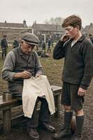 1920-იანი წლები. ბენჯამინ რასელი უყურებს თავის ფეხბურთელ შვილს, რომელიც მატყლის სვიტერში იტანჯება. მატყლი კანს აღიზიანებს, მას ცხელა, ბიჭი კი ვარჯიშზე მეტად იკაწრება. მაშინ რასელი იღებს რბილ ბამბას და კერავს პირველ თავისუფალ, მრგვალი ამოჭრის კაფტანს — სვიტშოტის პროტოტიპს. შვილი ბედნიერია, გუნდი აღფრთოვანებული, ერთ წელიწადში კი ყველა ფეხბურთელი ბამბაში დარბის. შემდეგ სვიტშოტი მოედნიდან უნივერსიტეტებში გადავიდა, იქიდან — ქუჩებში, შემდეგ კი მაღალ მოდაში. დღეს ჩვენ მას სნიკერებთან და პიჯაკებთან ერთად ვატარებთ, არც კი ვფიქრობთ, რომ ეს ერთი ახალგაზრდა სპორტსმენის ოფლიანობას გვმართებს. ცხოვრების ირონია: ის, რაც ოფლისთვის იყო შექმნილი, კომფორტის სიმბოლოდ იქცა. |
| 🔹 ქუსლები: მამაკაცური გამოგონება ქალური ფინალით
თუ ფიქრობთ, რომ ქუსლები ქალებმა გამოიგონეს, რათა თავი იტანჯონ და მამაკაცები გაახარონ — ცდებით. ისინი IX საუკუნეში სპარსელმა მხედრებმა გამოიგონეს, და მხოლოდ საქმისთვის: ქუსლი ფეხს უზრუნველყოფდა უნაგირში, როცა მშვილდოსანი ალამზე ისროდა. ყველაფერი ფუნქციონალურია, კოკეტობის გარეშე. მაგრამ ევროპაში მაღალი ქუსლები დაინახეს და გადაწყვიტეს: "ეს სტატუსია". მამაკაც-არისტოკრატებმა დაიწყეს მათი ტარება, რათა უფრო მაღლა და დიდებულად გამოჩენილიყვნენ. ქუსლები ვერსალის პარკეტებზე ცქრიალა, მათში მეფეები იჩხრიკებოდნენ. შემდეგ კი, როგორც ყოველთვის, მოდა ქალებმა გადაიღეს — და უკვე XVIII საუკუნისთვის მაღალი ქუსლი მხოლოდ ქალურ პრეროგატივად იქცა. ასე რომ, ქალბატონებო, როცა შეკერის მოუხერხებლობაზე ჩივით, გაიხსენეთ: თავდაპირველად მათ მამაკაცები ატარებდნენ საბლებით. |
🔹 ფეხსაცმელი, რომელიც ამ შემოდგომას გაგათბობთ 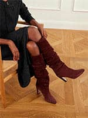 როცა ზაფხულის სითბოს შემოდგომის დღეები ცვლის, ფეხსაცმლის არჩევის საკითხი განსაკუთრებით აქტუალური ხდება. ერთი მხრივ, ეს წვიმებისა და სველის სეზონია, რომელიც ტენისგან საიმედო დაცვას მოითხოვს. მეორე მხრივ, შემოდგომა იძლევა თბილ, მზიან დღეებსაც, დაცვენილი ფოთლების შრიალით, როცა სიმსუბუქე და ელეგანტურობა გვსურს. და რა თქმა უნდა, ცუდ ამინდშიც კი ქალი უნდა იყოს უნაკლო — ოფისში, საქმიან შეხვედრაზე თუ გასეირნებაზე. ამიტომ, შემოდგომის ფეხსაცმლის გარდერობი აგებულია პრაქტიკულობისა და სტილის ბალანსზე.
განვიხილოთ ძირითადი კატეგორიები აქტუალური მოდელების მაგალითზე NET‑A‑PORTER-დან. |
🔹კატეგორია Boots 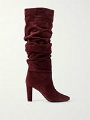 ჩექმები და ნახევარჩექმები — ცივი სეზონის საფუძველი. სწორედ ეს კატეგორია ხდება მთავარი შემოდგომა-ზამთრის გარდერობში, რადგან იცავს წვიმის, სველისა და ქარისგან. ჩექმები მრავალ ფასონში არსებობს — ლაკონური ჩელსიდან უხეში მილიტარისა და ელეგანტური ქუსლიანი მოდელებით. არჩევისას ყურადღება მიაქციეთ მასალას (ნატურალური ტყავი ან ზამში წყალგამძლე გაჟღენთით), ძირის ტიპს (რეზინი ან ТЭП კარგი გადაბმისთვის) და ჩექმის სიმაღლეს. |
• Ankle 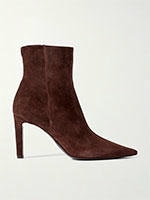 ნახევარჩექმები: მრავალმხრივი ფეხსაცმელი შემოდგომისთვის, რომელიც ტერფს ფარავს. უხდება ჯინსებს, კალთებსა და კაბებს. ოფისისთვის აირჩიეთ მოდელები მდგრადი ქუსლით გლუვი ტყავისგან, ცუდი ამინდისთვის — ტრაქტორის ძირით წყალგაუმტარი მასალებისგან. |
• Chelsea 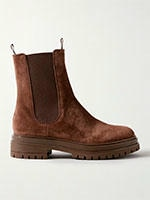 ჩელსი: კლასიკური ჩექმები დაბალ ქუსლზე, გვერდებზე ელასტიური ჩანართებით. გამოირჩევიან ლაკონური დიზაინითა და კომფორტით — ადვილად იხსნებიან და იცმევიან. იდეალურია ყოველდღიური ტარებისა და ოფისის იერებისთვის მშრალ ამინდში. |
• Cold Weather 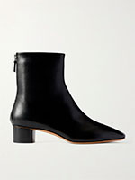 იზოლირებული ჩექმები: მოდელები გვიანი შემოდგომისა და პირველი ყინვებისთვის. ხშირად აქვთ ბეწვის საფენი ან სინთეტიკური იზოლაცია. უზრუნველყოფენ კომფორტს დაბალ ტემპერატურაზე და იცავენ ქარისგან. |
• Combat 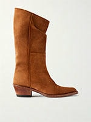 მილიტარი ჩექმები: უხეში ჩექმები შეკვრით და რელიეფური ძირით. გამოირჩევიან სიმტკიცითა და აცვიათ წინააღმდეგობით. იერს მატებენ გაბედულებას და შესანიშნავად უხდება ჯინსებსა და "ბოჰო" სტილის კაბებს. |
• Cowboy 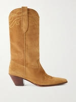 კოვბოის ჩექმები: მოდელები დამახასიათებელი დახრილი ქუსლით და ჩექმით ხბოს შუამდე. ამ სეზონში განსაკუთრებით აქტუალური. იერს მატებენ western-სტილის ელფერს და შესანიშნავად გამოიყურებიან ჯინსებთან და მიდი კალთებთან. |
• Knee-High 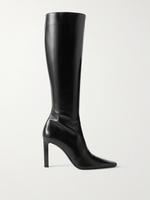 მუხლზე მაღალი ჩექმები: ელეგანტური ფეხსაცმელი, რომელიც ვიზუალურად წაგრძელებს ფეხებს. ატარეთ ისინი ჯინსების თავზე ან მინი-კალთებთან. იდეალურია ეფექტური საღამოს და ყოველდღიური იერების შესაქმნელად, კარგად იცავენ სიცივისგან. |
• Rain Boots 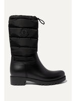 რეზინის ჩექმები: შეუცვლელი ფეხსაცმელი წვიმიანი ამინდისთვის. თანამედროვე მოდელები სტილური და ელეგანტურია — გამოდის ქუსლიანი და სხვადასხვა ფერის. სრულიად წყალგაუმტარი და ადვილად იწმინდება. |
🔹კატეგორია ESPADRILLES 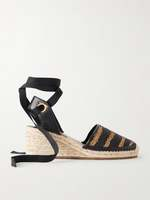 ესპადრილიები: ფეხსაცმელი ნაქსოვი ჯუთის ძირით, ტრადიციულად ასოცირდება ზაფხულთან. თუმცა, თბილი შემოდგომის დღეებისთვის ზოგიერთი მოდელი მდგრადი პლატფორმით შეიძლება იყოს შესაფერისი. ხშირად მზადდება ბამბის, სელის ან ტყავისგან. იერს მატებენ სიმსუბუქეს და ხმელთაშუა ზღვის ხიბლს. შემოდგომისთვის აირჩიეთ დახურული ვარიანტები მკვრივი მასალებისგან. |
🔹კატეგორია Flat Shoes 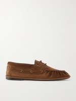 ბრტყელძირიანი ფეხსაცმელი — იდეალური გამოსავალი ყოველდღიური ტარებისთვის, როცა კომფორტი ქუსლის სიმაღლეზე მნიშვნელოვანია. ეს კატეგორია აერთიანებს ელეგანტურ ბალეტებს, მკაცრ ლოფერებს და კომფორტულ სლიპერებს. ასეთი ფეხსაცმელი შეუცვლელია ოფისში, გასეირნებისას და მოგზაურობისას. შემოდგომისთვის აირჩიეთ მოდელები მკვრივი ტყავის ან ზამშისგან წყალგამძლე დამუშავებით და რელიეფური ძირით, რათა თავიდან აიცილოთ სრიალი სველ ზედაპირებზე. |
• Ballet Flats 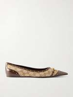 ბალეტები: კლასიკური ქალური ფეხსაცმელი თხელ ძირზე. შემოდგომისთვის აირჩიეთ მოდელები მკვრივი ტყავის ან ზამშისგან წყალგამძლე გაჟღენთით. შესანიშნავად უხდება კაბებს, კალთებსა და გაშლილ შარვლებს. |
• Loafers 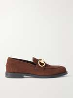 ლოფერები: იდეალური არჩევანი თბილი შემოდგომის დღეებისა და ოფისის დრეს-კოდისთვის. შესანიშნავად ავსებენ შარვლის კოსტიუმებსა და კაბებს. ამ სეზონში პოპულარულია მოდელები გასქელებულ ძირზე და რბილი ზამშისგან. |
• Slippers 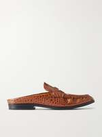 სახლის ჩუსტები / სლიპერები: კომფორტული ფეხსაცმელი უკანა ნაწილის გარეშე, ხშირად რბილ ძირზე. ქუჩაში გასასვლელად აირჩიეთ მოდელები მკვრივი ტყავისგან მდგრადი ძირით. კარგია მოდუნებული ყოველდღიური გასასვლელებისა და მოგზაურობისთვის. |
🔹კატეგორია Heels 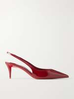 ქუსლიანი ფეხსაცმელი — კატეგორია მათთვის, ვინც წვიმიან სეზონშიც კი რჩება ელეგანტური. ქუსლიანი ფეხსაცმელი იერს მატებს ქალურობას, სტატუსს და ვიზუალურად წაგრძელებს სილუეტს. შემოდგომისთვის უმჯობესია აირჩიოთ მოდელები მდგრადი ქუსლით (სქელი კვადრატული ქუსლი ან პლატფორმა) წყალგაუმტარი მასალებისგან. განსაკუთრებით აქტუალურია დახურული მოდელები — ლოდოჩკები, სლინგბეკები და მიულები, რომლებიც ფეხს იცავენ ქარისა და მცირე ნალექისგან. |
• Heeled Sandals 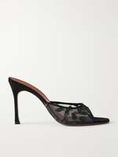 ქუსლიანი სანდლები: ზაფხულის კლასიკა, რომელიც შეიძლება იყოს აქტუალური თბილ შემოდგომის დღეებში. აირჩიეთ დახურული მოდელები მკვრივი მასალებისგან მდგრადი ქუსლით. იდეალურია საღამოს გასასვლელებისა და დახურულ სივრცეებში ჩატარებული ღონისძიებებისთვის. |
• Mules 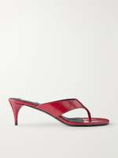 მიულები: ფეხსაცმელი უკანა ნაწილის გარეშე ნებისმიერ ქუსლზე. გარდამავალი სეზონის მოდელი — ელეგანტური და კომფორტული. შესანიშნავად გამოიყურებიან შარვლებთან და მიდი კალთებთან. შემოდგომისთვის აირჩიეთ ტყავის ან ზამშის ვარიანტები. |
• Pumps 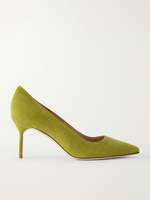 ლოდოჩკები: კლასიკური ქუსლიანი ფეხსაცმელი — ოფისის გარდერობის საფუძველი. შემოდგომისთვის აქტუალურია მოდელები მდგრადი ქუსლით მკვრივი ტყავისგან. უხდება საქმიან კოსტიუმებს, კაბებსა და ჯინსებს. |
• Slingback 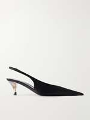 სლინგბეკები: ფეხსაცმელი რემშით ქუსლის გარშემო, რომელიც აერთიანებს ლოდოჩკების ელეგანტურობას და სანდლების კომფორტს. შემოდგომისთვის აირჩიეთ დახურული მოდელები ტყავის ან ზამშისგან მდგრადი ქუსლით (50 მმ-მდე) გრძელი გასეირნებისა და სამუშაო დღეებისთვის. შესანიშნავად ავსებენ საქმიან და ყოველდღიურ იერებს. |
🔹კატეგორია Sandals 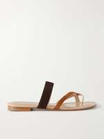 სანდლები — მსუბუქი ღია ფეხსაცმელი, რომელიც ძირითადად თბილ სეზონთან ასოცირდება. თუმცა, შემოდგომის გარდერობში ის შეიძლება იყოს შესაფერისი თბილ და მშრალ დღეებში, ასევე დახურული სივრცეებისთვის. გარდამავალი სეზონისთვის აირჩიეთ სანდლები მკვრივი ტყავის ან ტექსტილისგან, მცირე პლატფორმაზე ან მდგრადი ქუსლით. დახურული მოდელები (თითებით) უკეთ იცავენ სიგრილისა და ქარისგან. |
• Flat Sandals 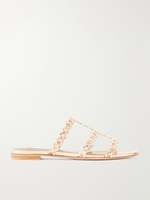 ბრტყელძირიანი სანდლები: მსუბუქი ზაფხულის ფეხსაცმელი. თბილ შემოდგომის დღეებში შეიძლება იყოს შესაფერისი ქალაქურ იერებში. გრილი ამინდისთვის აირჩიეთ მოდელები მკვრივი ტყავისგან დახურული თითებით. |
• Flip Flops 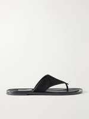 შლეპები: პლაჟის და სახლის ფეხსაცმელი. შემოდგომის გარდერობში პრაქტიკულად არ გამოიყენება, გარდა დახურული სივრცეებისა (სპა, აუზი). |
• Gladiator 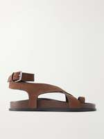 გლადიატორები: სანდლები მრავალი გადაჯვარედინებული თასმით. შემოდგომისთვის შესაფერისია დახურულ ვარიანტებში მკვრივი ძირით. იერს მატებენ გაბედულებასა და ორიგინალურობას. |
• Slides 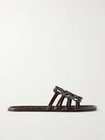 სლაიდები: ღია ბოსონჟკები უკანა ნაწილის გარეშე. ქალაქში გასასვლელად თბილ დღეებში აირჩიეთ ტყავის მოდელები მცირე ქუსლით ან პლატფორმაზე. მოსახერხებელია სწრაფი გასასვლელებისა და გასეირნებისთვის. |
🔹კატეგორია Sneakers 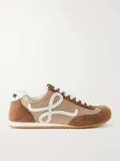 სნიკერები და კედები — მრავალმხრივი კატეგორია, რომელიც დიდი ხანია სპორტის ფარგლებს გასცდა. დღეს სნიკერები ყოველდღიური და საქმიანი გარდერობის სრულფასოვანი ნაწილია. შემოდგომისთვის აქტუალურია მოდელები მემბრანული ტექნოლოგიებით (Gore-Tex), რომლებიც იცავენ წვიმისგან, და მოცურების საწინააღმდეგო ძირით. მაღალი კედები იცავენ ტერფს ქარისგან, რეტრო-მოდელები იერს მატებენ სტილს, ხოლო სპორტული ვარიანტები კომფორტს უზრუნველყოფენ აქტიური სიარულისას. |
• High-Top 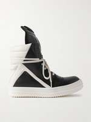 მაღალი კედები: მოდელი, რომელიც ტერფს ფარავს. კარგად იცავს ფეხს ქარისა და მცირე წვიმისგან. შესანიშნავად უხდება ჯინსებს, კარგოს შარვლებსა და სპორტულ კოსტიუმებს. |
• Low-Top 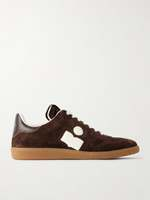 დაბალი კედები: კლასიკური კედები დაბალი ზემოდან. შემოდგომის მშრალ ამინდში — შესანიშნავი ალტერნატივა ფეხსაცმლისთვის. აირჩიეთ მოდელები მკვრივი ტყავის ან ტექსტილისგან წყალგამძლე გაჟღენთით. |
• Retro 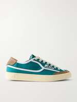 რეტრო-კედები: ვინტაჟური დიზაინის მოდელები, შთაგონებული წარსული ათწლეულების სპორტული ფეხსაცმლით. აქტუალურია ყოველდღიურ იერებში. ხშირად აქვთ მასიური ძირი და ნათელი ფერის აქცენტები. |
• Sport and Performance 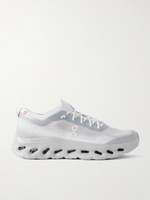 სპორტული სნიკერები: ტექნოლოგიური ფეხსაცმელი სირბილისა და აქტიური დასვენებისთვის. აღჭურვილია მემბრანული ქსოვილებით (მაგ., Gore-Tex), ამორტიზაციის ძირით და ამრეკლავი ელემენტებით. ინარჩუნებენ სიმშრალეს და კომფორტს წვიმიან ამინდშიც. |
🔹 მიმოხილვა 10 ყველაზე გავლენიანი და ცნობილი ბრენდის სიიდან, რომლებიც ადგენენ სტანდარტებს ფეხსაცმლის დიზაინის სამყაროში:
Christian Louboutin — საღამოსა და წითელი ხალიჩის მოდის ლეგენდა, რომელიც ცნობილია წითელი ძირით. მოსაზრება: კლასიკური გლამურის, მაცდური სილუეტებისა და მაღალი შკილკების სიმბოლო (მოდელები So Kate და Pigalle). ეს არის ფეხსაცმელი-განცხადება, რომელიც ქმნის უნაკლო სტატურას და საღამოს იერს.
Manolo Blahnik — დახვეწილი კლასიკის სინონიმი, რომელიც აბსოლუტამდე აიყვანა სერიალმა "სექსი დიდ ქალაქში". მოსაზრება: კულტური ლოდოჩკები Hangisi კრისტალების ბალთით — ელეგანტურობის მწვერვალია. ბრენდი ცნობილია წარმოუდგენლად კომფორტული კოლოდკით ქუსლიან ფეხსაცმელში.
Jimmy Choo — პრემიუმ ფეხსაცმლის გიგანტი წითელი ხალიჩებისა და საქორწილო იერებისთვის. მოსაზრება: ბრენდი ოსტატურად აერთიანებს სამკაულის დეკორს, დახვეწილ რემშებსა და თანამედროვე ტრენდებს. შესანიშნავი არჩევანი საზეიმო ღონისძიებებისა და ნათელი აქცენტებისთვის.
Bottega Veneta — მთავარი ინოვატორი თანამედროვე ფეხსაცმლის კატეგორიაში ბოლო წლებში. მოსაზრება: სწორედ მათ შემოიტანეს ტრენდში მოცულობითი ნაქსოვი ტყავი Intrecciato, კვადრატული თითი და საბუმბლე ფორმები (Padded Sandals, Lug-ის ჩექმები). იდეალურია მათთვის, ვინც ეძებს მწვავე მოდურ დიზაინს.
Amina Muaddi — თანამედროვე ფეხსაცმლის ინდუსტრიის ფენომენი ცნობადი არქიტექტურული პირამიდის ქუსლით. მოსაზრება: ფეხსაცმელი და სანდლები ნათელი კრისტალებითა და ვინილით გახდა სოციალური ქსელების თაობისა და მოდის მოყვარულთა სურვილის მთავარი საგანი.
Maison Margiela — კონცეპტუალური ავანგარდი, რომელმაც ფეხსაცმლის შესახებ წარმოდგენა გადააბრუნა. მოსაზრება: მათი ცნობილი მოდელი Tabi გაყოფილი დიდი თითით — ყველაზე ცნობადი სილუეტია ნიშურ დიზაინში, რაც ხაზს უსვამს თანამედროვე მოდის ღრმა გაგებას. Gianvito Rossi — ლაკონური იტალიური მინიმალიზმისა და მაღალი ხარისხის ოსტატი. მოსაზრება: სერჯო როსის ვაჟმა იდეალამდე მიიყვანა ბაზისური ლოდოჩკები და გამჭვირვალე სილიკონის სანდლები (Plexi). არჩევანი მათთვის, ვინც აფასებს სუფთა ხაზებსა და კომფორტს.
Tod's — იტალიური ხარისხისა და Quiet Luxury სტილის ხატი. მოსაზრება: მათი მოკასინები რეზინის ძირის ნაწვიმებით (Gommino) და ტყავის ლოფერები ფირმული ბალთით — ოქროს სტანდარტია ყოველდღიური ბაზისური ფეხსაცმლის.
The Row — თანამედროვე მინიმალიზმისა და თავშეკავებული ფუფუნების ლიდერი ოლსენის დებისგან. მოსაზრება: ბრენდის ბალეტები, მინიმალისტური სანდლები და ნახევარჩექმები კულტურად იქცა უნაკლო მასალების, ლოგოების არარსებობის და მაქსიმალური კომფორტის წყალობით.
Roger Vivier — ისტორიული ფრანგული სახლი, რომელმაც შექმნა პირველი შკილკის ქუსლი და მართკუთხა მეტალის ბალთა. მოსაზრება: მათი ელეგანტური ბალეტები, სწორი ჩექმები და მართკუთხა ბალთიანი ფეხსაცმელი — პარიზული შიკისა და დროგარეშე ელეგანტურობის ეტალონია. |
Change page language: |